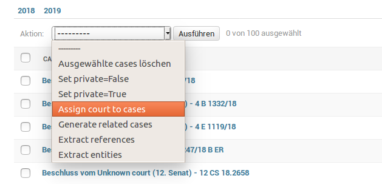

Processing
OLDP comes with a data processing pipeline. How to write your own processing step is explained under Development. In the following we explain the execution of the processing pipeline.
Django Admin
The most convenient way to execute processing steps is to use the Django admin interface. For all models (e.g. cases or laws) that have available processing steps, you only need to select the target items from the list by clicking on the checkboxes and then select one processing step from the action drop-down menu:

Be aware that processing can take time, especially when running complex steps on a large number of items. Thus, the web server might time out and send you a 500 error message.
Available content processors
For large data-sets and complex selection of to be processed items, it is recommened to execute the processing over commandline. Each model comes with an own Django management command:
Cases
Management command:
./manage.py process_cases
Laws
Management command:
./manage.py process_laws
Courts
Management command:
./manage.py process_courts
References
Management command:
./manage.py process_references
Parameters
Use the --help argument to display a list of available parameters.
--input INPUT [INPUT ...]
--input-handler INPUT_HANDLER
Read input from file system
--order-by ORDER_BY Order items when reading from DB
--filter FILTER Filter items when reading from DB
--limit LIMIT
--start START
--max-lines MAX_LINES
--source SOURCE When reading from FS process files differently
(serializer)
--empty Empty existing index
When using db as input handler, the parameter --filter and --exclude are URL-encoded
and support Django model queries (See examples).
Examples
Find corresponding court to all cases that are currently assign to the default court (default court id = 1):
./manage.py process_cases --input-handler db --filter court__pk=1 assign_court
Limit the number of processed cases to 100 and order by last updated date, i.e., process oldest first.
# Assign court
./manage.py process_cases --input-handler db --filter court__pk=1 --order-by updated_date --limit 100 assign_court
# Extract references
./manage.py process_cases --input-handler db --order-by updated_date --limit 100 extract_refs
Cases that are pending review and from courts located in state with id 5, exclude cases by type:
./manage.py process_cases --input-handler db --filter court__state_id=5&review_status=pending --exclude type=Urteil all
Accept currently pending cases with a defined court:
./manage.py process_cases --input-handler db --order-by updated_date --filter court__pk__gt=1 --limit 100 set_review_accepted
This can be also done via the Django shell (./manage.py shell):
from oldp.apps.cases.models import Case
Case.objects.filter(court__pk__gt=1, review_status="pending").update(review_status="accepted")